Casos técnicos avanzados¶
Qué es¶
Casos técnicos que van más allá de la configuración estándar de PBX: enrutar un IVR usando reconocimiento de voz o webservice en vez de tonos DTMF, conectar un troncal SIP con un operador móvil vía IMS o repartir tráfico entre varios troncales, interconectar sistemas AsterCC independientes, aprovisionar terminales IP/SIP, gestionar el número que llama (Caller ID), levantar infraestructura de soporte (VPN, correo SMTP saliente, sincronización de archivos, backups), y operar la instancia (pruebas funcionales, tarifas y facturación).
Cómo se usa¶
IVR con reconocimiento de voz (ASR)¶
En vez de pedir al cliente que presione una tecla, el IVR puede pedirle que diga la opción y enrutar según lo reconocido:
- Crea el flujo de IVR con sus parámetros básicos.
- Agrega, en orden: una acción de respuesta, luego una de aviso de voz (pidiendo al cliente que diga la opción — ej. "diga el área con la que desea comunicarse: consultas de producto, servicio al cliente o quejas"), y luego una acción de reconocimiento de voz.
- En la acción de reconocimiento, configura:
- Duración máxima: tiempo máximo que el sistema graba antes de intentar reconocer.
- Silencio máximo: si detecta silencio en la línea por N segundos, da por terminada la grabación y empieza a reconocer.
- El resultado del reconocimiento se guarda en una variable (ej.
ASR1).
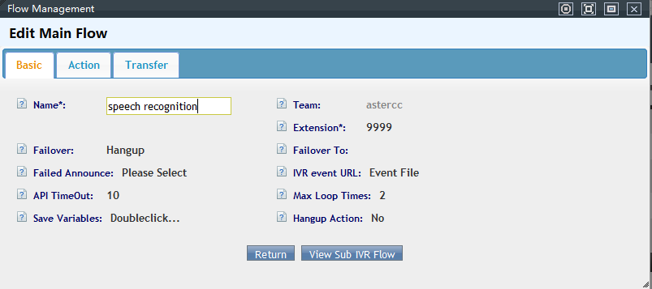
- Da de alta las colas y grupos de agentes correspondientes a cada opción de enrutamiento.
- Configura el destino del nodo de IVR usando la variable de reconocimiento como condición — por ejemplo, si
ASR1= "quejas", enruta a la cola de quejas.
Tip
Igual que en el enrutamiento por variables de las colas (ver 4.1), el mecanismo de fondo es el mismo: una variable de sistema que se compara contra un valor esperado para decidir el destino. La documentación EN conserva dos artículos (how_to_config_asr_automatic_speech_recognition_in_ivr y how_to_use_speech_recognition_in_ivr) que describen exactamente el mismo procedimiento que la fuente ZH — no aportan pasos adicionales, solo confirman que el flujo es idéntico en ambas versiones del wiki. El wiki ZH además duplica esta misma página, palabra por palabra, en dos namespaces distintos (用途和案例 y 实际案例指导) — ambos se citan en Fuentes por ser archivos distintos, pero no hay contenido adicional que aprovechar de la copia paralela.
Atajos de teclado y teclas rápidas para agentes¶
El sistema define combinaciones de teclado utilizables desde el teléfono (marcando * + código, antes o durante la llamada) y desde la interfaz web de agente. Todas son configurables — los códigos siguientes son los valores por defecto.
Códigos desde el teléfono (fuera de llamada):
| Código | Función |
|---|---|
*61 |
Tomar (capturar) una llamada que está timbrando en otra extensión del mismo grupo de cuentas — o de cualquier extensión si el grupo no está definido |
*62 |
Anunciar el número de la extensión actual |
*64 |
Iniciar sesión como agente (pide número de agente y contraseña; permite elegir entre todas las colas asignadas o solo algunas) |
*65 |
Cerrar sesión de agente en todas las colas asignadas a esta extensión |
*67 / *68 |
Activar / desactivar el modo No molestar |
*69 |
Cambiar el agente a modo entrante/saliente |
*71 |
Cambiar el agente a modo solo saliente (la cola no le asignará llamadas entrantes) |
*72 |
Cambiar el agente a modo solo entrante (no puede marcar hacia afuera) |
*73 |
Volver a llamar al último número marcado/recibido en esta extensión |
Teclas rápidas durante la llamada:
| Código | Función |
|---|---|
*81 |
Ignorar la lista de números bloqueados y forzar el marcado |
*51 |
Transferencia ciega (modo extensión) |
*52 |
Transferencia con consulta (modo extensión) |
*54 |
Consulta usando número de agente (modo agente) |
*55 |
Consulta usando número de teléfono (modo agente) |
Atajos de la interfaz web:
Esc: cierra la ventana/panel activo.Ctrl+Z(panel de agente): abre el panel de llamadas.Ctrl+←(panel de marketing saliente): abre/cierra el panel de tareas lateral.Ctrl+↓(panel de marketing saliente): abre/cierra el panel de encuesta inferior.
Callback desde IVR cuando no hay agentes disponibles¶
Cuando todos los agentes de una cola están ocupados (o es fuera de horario), el sistema puede ofrecerle al cliente la opción de recibir una llamada de vuelta en lugar de esperar:
- Crea un IVR que se dispare como transferencia por fallo de la cola (por ejemplo, cuando el tiempo de espera se agota).
- En ese IVR agrega una acción de recepción de dígitos (readdata) con un mensaje del tipo: "agentes ocupados, para seguir esperando presione 1, para solicitar una devolución de llamada presione 2, para dejar un mensaje presione 3".
- Configura la transferencia:
- Si el cliente presiona
1→ transfiere de vuelta a la misma cola. - Si presiona
2→ transfiere a la opción "solicitar devolución de llamada", eligiendo si el destino es un módulo de atención al cliente entrante o de marketing outbound; el sistema notifica a los agentes del grupo correspondiente. - Si presiona
3→ transfiere a la aplicación de mensajes de voz. - En la configuración de la cola, define la transferencia por fallo hacia este IVR de callback para que se active automáticamente cuando se agote el tiempo de espera.
Tip
Las solicitudes de devolución de llamada se guardan con prioridad máxima en la lista de llamadas perdidas del agente, por encima de las llamadas perdidas normales, y generan una notificación inmediata al grupo de agentes correspondiente.
Consultar un webservice desde IVR¶
Un IVR puede llamar a un servicio web externo (HTTP/webservice) para validar un dato ingresado por el cliente — por ejemplo, un número de cliente — y enrutar la llamada según la respuesta:
- Sube los anuncios de voz necesarios en Avanzado → Anuncios.
- Crea el flujo principal en Avanzado → IVR, con un límite de repeticiones (ej. 3 intentos).
- Agrega, en orden: acción de respuesta, acción de recepción de dígitos (pide el número de cliente o
#si no lo tiene) y la transferencia correspondiente — a la cola "Otros" si el cliente no tiene número, o a un sub-flujo de confirmación si lo ingresó. - En el sub-flujo de confirmación, repite el número al cliente y pide confirmación antes de continuar a un segundo sub-flujo que llama al webservice.
- En ese segundo sub-flujo, agrega una acción HTTP: pasa el número de cliente como parámetro y recibe la respuesta del servicio.
- Da de alta el DID específico para esta línea en PBX → DID, y crea la ruta entrante correspondiente apuntando al IVR principal.
Tip
El webservice de ejemplo (PHP) recibe el número de cliente y devuelve una cadena con el formato resultado|numero|dato — el IVR puede usar cualquiera de esos valores como variable de transferencia. Para leer la información que el cliente ingresó desde un evento del sistema, hay dos rutas: si tu página personalizada usa el framework de AsterCC, se integra como página embebida; si no, se recibe vía http push de eventos del sistema.
Verificar la validez de una tarjeta de crédito en IVR¶
Caso más detallado de IVR con webservice: validar el número y la fecha de vencimiento de una tarjeta de crédito, y devolver el saldo disponible.
- Flujo principal: acción de respuesta → recepción de dígitos para el número de tarjeta (variable
CARDNO) → repetición del número (Saydigits) → confirmación (1confirma,2repite). - Primer sub-IVR (fecha de vencimiento): recibe la fecha en formato mes-año (variable
DATENO), la repite y confirma igual que el número. -
Segundo sub-IVR (llamada HTTP): acción HTTP que envía
cardno=CARDNO|validdate=DATENOcomo parámetros y recibe la respuesta en la variable globalR1, más un valor de control eninputcode.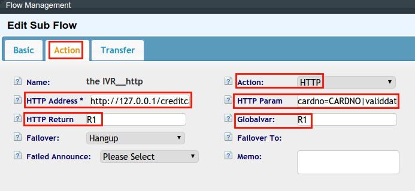
-
Tercer sub-IVR (resultado válido): anuncia el saldo disponible usando la acción Sayamount sobre la variable
R1; permite repetir con0. - Cuarto sub-IVR (resultado inválido): si
inputcode=0, informa que el número no existe y permite reintentar con*, regresando al flujo principal.
Warning
El formato de "HTTP Return" siempre lleva el prefijo inputcode por defecto (no se escribe explícitamente); si defines variables globales adicionales a partir del retorno HTTP, sus nombres deben coincidir exactamente en mayúsculas con la lista de "Globalvar" configurada en la acción HTTP — un desajuste de mayúsculas/minúsculas hace que la variable llegue vacía.
Transferencia con consulta, callback y conferencia desde la plataforma del agente¶
La barra de herramientas del agente ofrece cuatro acciones sobre una llamada en curso — Consult (consultar), CB (call back / finalizar consulta), Conf (conferencia) y Trans (transferir):
- Al contestar una llamada, el ícono Consult se pone naranja (disponible).
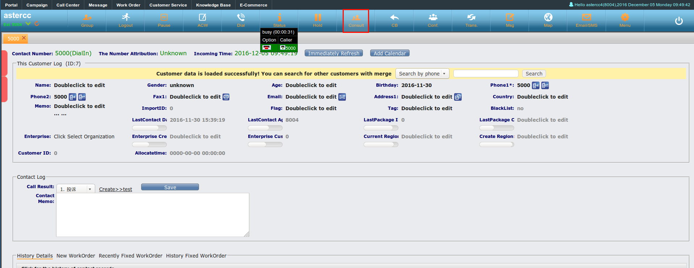
- Al hacer clic en Consult se abre un panel para marcar un número externo o consultar a otro agente o cola interna.
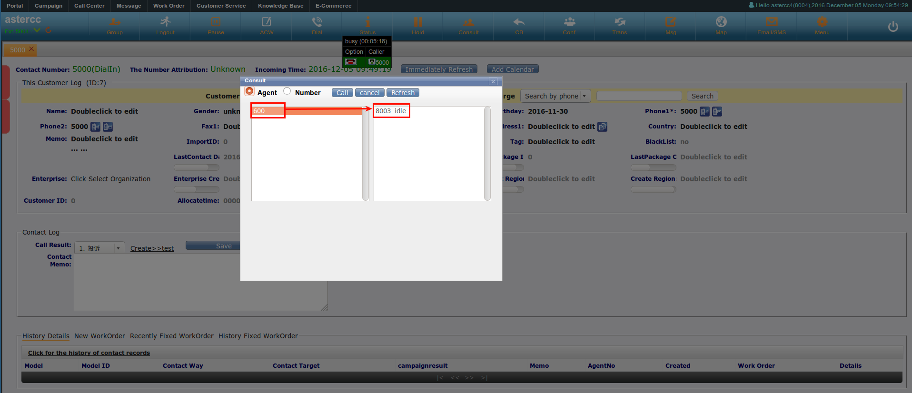
- Si se elige solo el número de cola (sin agente específico), el sistema busca automáticamente un agente en estado inactivo (idle) dentro de esa cola.
- Una vez que la consulta conecta, Consult se pone verde y CB, Conf y Trans se habilitan (naranja):
- CB finaliza la llamada con el agente consultado y regresa al cliente original.
- Conf pone a las tres partes (cliente, agente original, agente consultado) en una sala de conferencia.
- Trans transfiere al cliente directamente al agente consultado y cuelga la llamada original.
Troncal SIP con operador móvil vía IMS¶
Puede estar desactualizado
Este caso documenta parámetros específicos de un operador (China Mobile) vigentes en 2018. Los datos de conexión (dominio, servidor, formato de usuario) deben confirmarse con el operador actual antes de usarlos — se incluyen solo como ejemplo de la estructura general de este tipo de integración.
Al conectar un troncal SIP directamente con la red de un operador móvil (servicio tipo IMS), generalmente se necesita:
- Una línea dedicada hacia la red del operador (acceso a su red interna).
- Datos de registro: usuario (con formato específico del operador, ej.
+<código país><número>@<dominio del operador>), contraseña, dominio de registro, y servidor de salida. - Configurar el modo DTMF como inband en el troncal — necesario en varios operadores de este tipo para evitar problemas con tonos DTMF (ver también Solución de problemas).
- Para las llamadas entrantes, se agrega una cadena de registro en el troncal con el formato
<usuario>@<dominio>:<contraseña>:<usuario>@<dominio>@<servidor>:<puerto>/<DID>— el segmento final indica a qué DID llegan las llamadas entrantes de ese troncal. - Un error
484durante las pruebas suele resolverse deshabilitando el soporte de video en el troncal.
Enrutar llamadas por destino con varios troncales¶
Caso típico: una empresa con negocio internacional ya tiene un troncal para llamadas al exterior y quiere agregar un segundo troncal, más económico, para llamadas nacionales — de forma que el sistema elija automáticamente el troncal correcto según el prefijo marcado (ej. 00 para internacional, 0 para nacional), sin que el agente tenga que pensar en cuál usar.
- Configura el nuevo troncal nacional (ver la guía base de configuración de troncales en PBX y telefonía).
- Crea un grupo de troncales en PBX avanzado → Grupos de troncales, agregando ambos troncales al grupo. El orden en que se agregan define la prioridad: el sistema intenta primero el troncal listado primero y, si falla la conexión, continúa automáticamente con el siguiente del grupo.
- Asocia el grupo de troncales al equipo, en lugar de un troncal individual.
- En el troncal internacional, define la tarifa con prefijo
00y activa cobro forzado si se quiere impedir que el equipo marque por ese troncal cuando no existe una tarifa de extensión coincidente. - Repite el mismo patrón para el troncal nacional (prefijo
0) — al fallar el primer intento por el troncal internacional (o al no coincidir su condición), el sistema prueba el siguiente troncal del grupo.
Tip
"Cobro forzado" obliga a que exista una tarifa de extensión coincidente para poder marcar por ese troncal; si no se activa, la llamada sale sin validar tarifa. Ver más abajo el caso práctico de configuración de tarifas y facturación en este mismo artículo.
Enrutamiento de llamadas entrantes por fecha y hora¶
Dos variantes del mismo patrón — enrutar según franja horaria, ya sea a nivel de ruta entrante o dentro de las opciones de un IVR:
- Da de alta los grupos de timbrado (ringgroups) necesarios como posibles destinos.
- Crea los horarios (worktime): si la hora de inicio es mayor que la de fin, el sistema divide automáticamente el rango en dos intervalos.
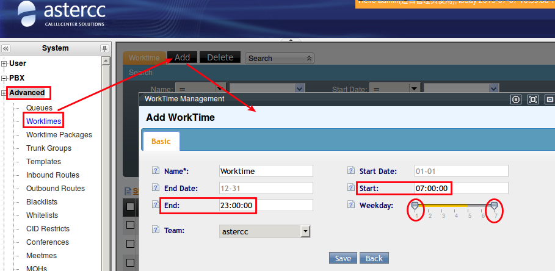
- Agrupa los horarios en paquetes de horario (worktime packages) — uno para horario laboral y otro para horario de descanso.
- Sube el anuncio de voz para cada franja (ej. mensaje fuera de horario).
- Crea el IVR principal: acción de respuesta, seguida de una acción de "Judge Time" (evaluar horario) que compara la hora actual contra los paquetes de horario, y la transferencia correspondiente hacia la cola o el destino de cada franja.
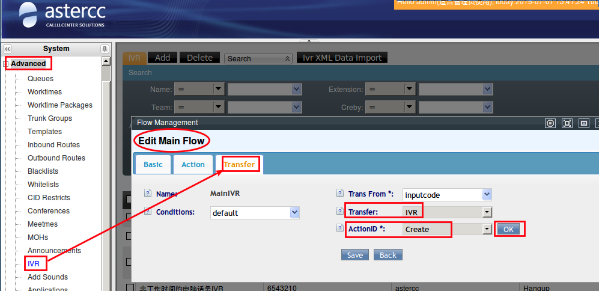
6. Variante dentro de opciones de IVR: en vez de evaluar el horario en la ruta entrante, se guarda la opción marcada por el cliente en una variable global (ej.PK) y se usa un IVR de control de tiempo que combina esa variable con la franja horaria para decidir el sub-IVR de destino.
Tip
La acción "Judge Time" es el mismo mecanismo tanto si se aplica a nivel de ruta entrante como dentro de un IVR — lo que cambia es en qué punto del flujo se evalúa.
Identificador de llamadas (caller ID)¶
El troncal debe permitir el envío del caller ID configurado (allowsend o equivalente); el sistema decide qué número usar siguiendo este orden de prioridad, de mayor a menor:
- Caller ID del troncal, cuando está forzado (obligatorio, ignora cualquier otra configuración).
- Caller ID del agente, cuando hay sesión de agente iniciada.
- Caller ID de la campaña, cuando hay sesión de agente iniciada.
- Caller ID del dispositivo (extensión).
- Caller ID del troncal, como valor por defecto sin forzar.
Casos de uso típicos:
- Número unificado por troncal: todas las llamadas salientes por ese troncal usan el mismo caller ID, sin importar el dispositivo o agente.
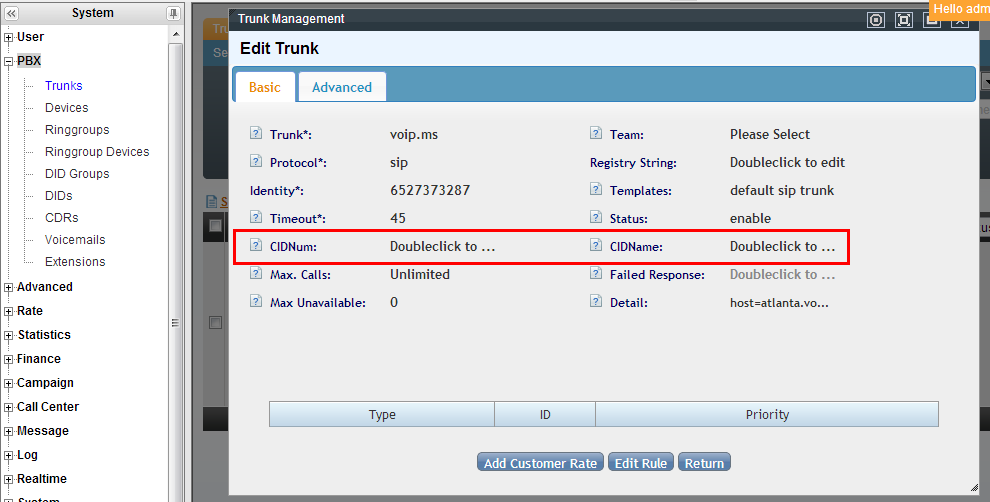
- Dispositivo con caller ID propio: útil cuando un equipo necesita presentarse con un número distinto al del troncal.
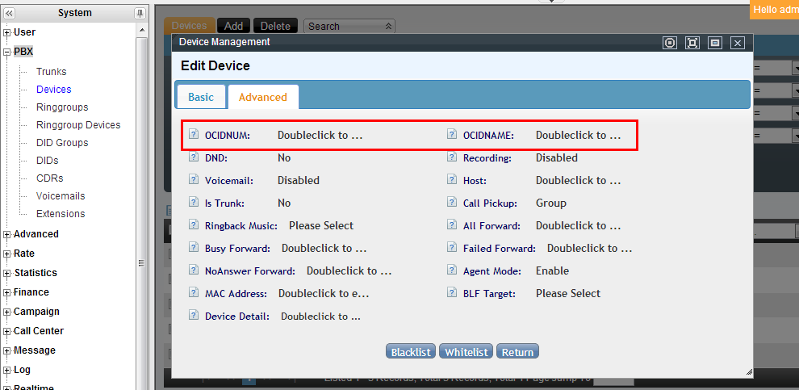
- Agente con caller ID propio: al iniciar sesión desde un dispositivo, las llamadas salientes usan el caller ID del agente en vez del del dispositivo.
- Campaña con caller ID propio: en centros de atención tipo BPO/outsourcing, cada campaña presenta su propio número al cliente.
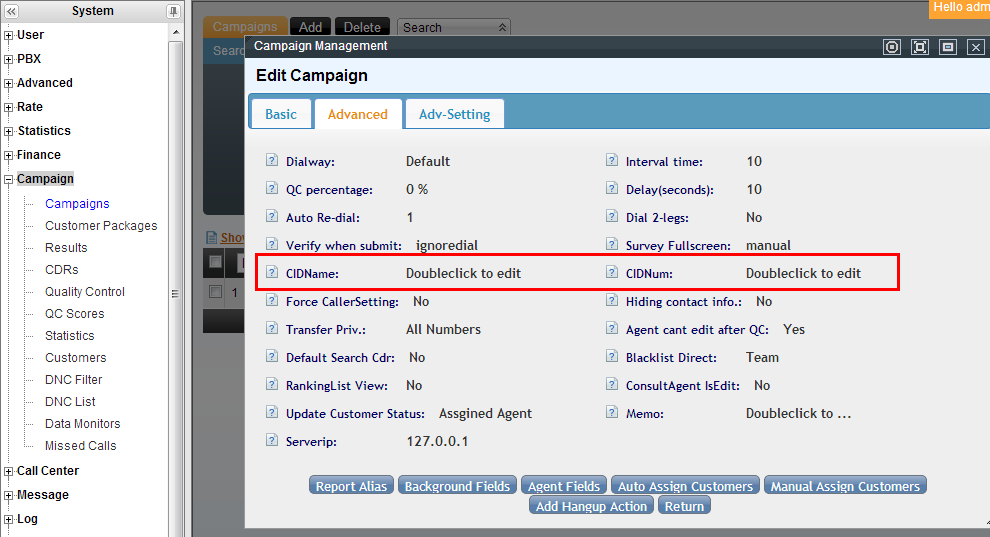
Fuente con contenido incompleto
Un archivo fuente ZH adicional (用途和案例/在电脑话务ivr中调用webservice并控制ivr转向.txt) tiene título sobre "llamar a un webservice desde IVR", pero su contenido real —las mismas capturas e ideas de caller ID por troncal/dispositivo/agente/campaña— coincide con el de este apartado, no con su propio título. Se cita en Fuentes porque su contenido efectivo cubre este tema; no se encontró una página ZH separada que documente la llamada a un webservice desde IVR para control de transferencia (ese caso ya está cubierto arriba con la fuente EN call_webservice_in_ivr.txt).
Enrutar llamadas entrantes según el origen geográfico del número que llama
Además de decidir qué número se muestra al marcar, el sistema puede leer el prefijo/origen del número entrante para tomar decisiones de enrutamiento — útil para empresas con varias sucursales que exponen un único número de contacto nacional y quieren identificar la región de origen del cliente (para enrutar a la sucursal más cercana, o para dar un trato distinto — ej. atención humana directa a zonas VIP y IVR automático al resto).
Note
La fuente ZH de este caso (用途和案例/如何配置按主叫号码归属地路由.txt) describe únicamente el objetivo del caso de uso ("usar la función de atributos de número para enrutar según la ubicación de origen del número que llama"), sin detallar los pasos de configuración concretos en la interfaz. Se documenta aquí la intención y el mecanismo (condición de enrutamiento basada en el prefijo/origen del número entrante) — si se necesita el procedimiento paso a paso, falta una fuente que lo detalle.
Conectar dispositivos entre servidores AsterCC distintos en la misma LAN¶
Escenario: dos servidores AsterCC en la misma red local (A y B), cada uno con su propio equipo de extensiones, que necesitan poder llamarse entre sí.
- En cada servidor, crea un troncal (PBX → Troncales) hacia el otro servidor.
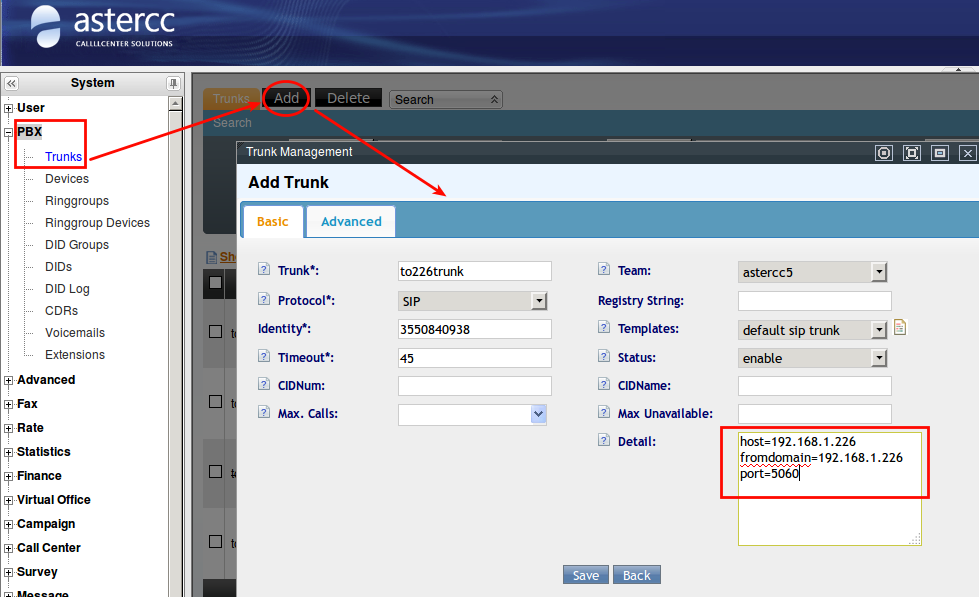
- Si el equipo ya tiene un troncal asociado, agrupa los troncales en un grupo de troncales (Avanzado → Grupos de troncales) y define ahí el nombre, estado, tipo de coincidencia y prefijo/longitud del número de origen.
- Vincula el troncal (o grupo de troncales) al equipo correspondiente en Usuarios → Equipos.
- Crea la ruta entrante en cada servidor: coincidencia de troncal = el troncal recién creado, transferencia a "Dispositivo", con Action ID en modo "auto-match".
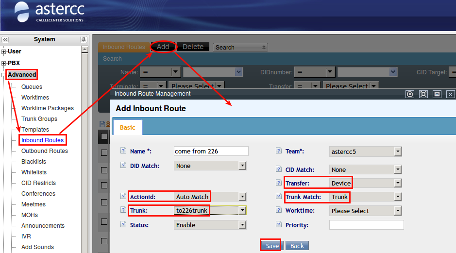
5. Repite exactamente la misma configuración en el servidor B — la conectividad es simétrica.Montar una VPN (OpenVPN) para acceso remoto seguro¶
Para administrar remotamente un servidor AsterCC de forma segura, o para interconectar oficinas sin exponer la PBX directamente a Internet, puede levantarse un servidor OpenVPN en el mismo host.
Puede estar desactualizado
Procedimiento documentado sobre CentOS 6.6 con OpenVPN 2.3.6 y Easy-RSA 3 (circa 2018-2019). Los paquetes, rutas de ejemplo (/usr/share/doc/openvpn-2.3.6/...) y el uso de iptables (en vez de firewalld/nftables) corresponden a esa versión de sistema operativo — validar contra la versión de Linux y OpenVPN realmente instalada antes de aplicar.
- Instalar el repositorio EPEL y el paquete
openvpn(incluye soportelzoypkcs11-helper):yum install openvpn. - Instalar Easy-RSA 3 (descargado como
easy-rsa-master.zipdesde GitHub) en/etc/openvpn/easy-rsa/— es la herramienta que genera la CA y los certificados de servidor/cliente. - Copiar
vars.exampleavarsdentro deeasyrsa3/y completar los campos de la organización (país, provincia, ciudad, email, etc.). - Inicializar el PKI y crear la CA:
./easyrsa init-pkiseguido de./easyrsa build-ca— pide una frase de paso (PEM pass phrase) que hay que recordar, sin ella no se pueden firmar más certificados. - Generar y firmar el certificado del servidor:
./easyrsa gen-req server nopassy./easyrsa sign server server. - Generar el parámetro Diffie-Hellman:
./easyrsa gen-dh(puede tardar varios minutos, no interrumpir). - Generar el certificado del cliente en un directorio separado (
init-pki,./easyrsa gen-req <nombre_cliente>), importar la solicitud al lado del servidor (./easyrsa import-req <ruta_al.req> <nombre_cliente>) y firmarla como cliente (./easyrsa sign client <nombre_cliente>). - Copiar
ca.crt,server.crt,server.keyydh.pema/etc/openvpn/en el servidor; copiarca.crt,<cliente>.crty<cliente>.keyal equipo cliente. - Editar
/etc/openvpn/server.confa partir de la plantilla de ejemplo del paquete: puerto (por defecto1194/udp), rutas a los certificados, red virtual (server 10.8.0.0 255.255.255.0). Para túnel completo (todo el tráfico del cliente sale por la VPN), descomentarpush "redirect-gateway def1 bypass-dhcp"ypush "dhcp-option DNS 8.8.8.8"; para túnel dividido (solo el tráfico hacia la red del servidor pasa por la VPN), dejarlas comentadas. - Habilitar reenvío de IP (
net.ipv4.ip_forward = 1en/etc/sysctl.conf+sysctl -p) y agregar NAT de salida:iptables -t nat -A POSTROUTING -s 10.8.0.0/24 -o eth0 -j SNAT --to <ip_publica>. - Abrir el puerto UDP elegido en el firewall.
- En el cliente, instalar OpenVPN-GUI, copiar los certificados y editar
client.ovpncon la IP/puerto público del servidor (remote <ip> 1194) y las rutas aca.crt/<cliente>.crt/<cliente>.key. - Arrancar el servicio (
service openvpn start) y conectar el cliente.
Tip
Si el servicio falla al iniciar por archivos de estado de una ejecución previa, borrar ipp.txt y openvpn-status.log en /etc/openvpn/ y reintentar. Si la conexión del cliente no llega, probar deteniendo temporalmente iptables en el servidor (service iptables stop) para descartar bloqueo de firewall durante las pruebas — ver también Solución de problemas.
Sincronizar archivos con rsync entre servidores¶
Para replicar grabaciones (u otros archivos) de un servidor AsterCC hacia otro servidor remoto:
- En el servidor origen, instala
rsyncyxinetd(yum install -y rsync xinetd) y crea los archivos de configuraciónrsyncd.conf,rsyncd.secretsyrsyncd.motd. - En
rsyncd.conf, define al menos un módulo (ej.[monitor]) apuntando a la carpeta a sincronizar (ej./var/spool/asterisk/monitor), conhosts allowrestringido a la subred permitida yauth userscon el usuario autorizado. - Da permisos
600al archivorsyncd.secrets(contenidousuario:contraseña) — sin este permiso la sincronización falla. - Configura
/etc/xinetd.d/rsync(disable = no,flags = IPv4) y reiniciaxinetd. - En el servidor remoto (cliente), crea un archivo de contraseña local y ejecuta
rsync -avzP usuario@ip::modulo /ruta/destino --password-file=/ruta/clave.
Tip
El comando de sincronización se puede agregar a crontab para automatizar respaldos periódicos de grabaciones entre servidores.
Configurar Postfix para envío de correo SMTP saliente (Linux)¶
Puede estar desactualizado
Probado sobre Ubuntu 14.04 y CentOS 6 con mailx/heirloom-mailx + Postfix, usando Gmail como servidor SMTP de ejemplo. Los requisitos de autenticación de los proveedores de correo cambian con frecuencia (Gmail, por ejemplo, ya no acepta usuario/contraseña simple para SMTP externo en cuentas nuevas) — validar contra el proveedor de correo actual antes de usarlo como base para el envío de notificaciones o de campañas de correo del sistema.
Sirve como prerrequisito de infraestructura para que el propio servidor pueda enviar correo saliente (por ejemplo, para notificaciones del sistema o para el envío de campañas de correo).
- Instalar los paquetes de correo:
heirloom-mailx/mailxypostfix(apt-get installen Ubuntu,yum installen CentOS). - Generar un certificado SSL local para el servidor SMTP externo (ejemplo Gmail): capturar el certificado con
openssl s_client -connect smtp.gmail.com:465y registrarlo en una base NSS local concertutil. - Editar el archivo de configuración de
mailx(/etc/nail.rcen Ubuntu,/etc/mail.rcen CentOS) agregando, como mínimo: servidor SMTP (smtp=smtps://smtp.gmail.com:465, osmtp://...:587consmtp-use-starttlssi se usa STARTTLS), remitente (from=), usuario/contraseña de autenticación (smtp-auth-user,smtp-auth-password) y método de autenticación (smtp-auth=login). - Si se necesitan varias cuentas de correo salientes en paralelo, definirlas como bloques
account <nombre> { ... }separados y seleccionar la cuenta al enviar con el parámetro-A <nombre>. - Enviar un correo de prueba:
mail -s "Test mail" <destino>, escribir el cuerpo y finalizar conCtrl+D.
| Parámetro | Descripción |
|---|---|
smtp-use-starttls |
Usar TLS/STARTTLS (necesario en el puerto 587) |
ssl-verify |
Modo de verificación SSL |
nss-config-dir |
Ruta a la base de certificados NSS local |
from |
Dirección de envío |
smtp |
Servidor SMTP externo |
smtp-auth-user / smtp-auth-password |
Credenciales de autenticación SMTP |
smtp-auth |
Método de autenticación |
Tip
Un error 535 durante el envío suele ser usuario/contraseña incorrectos; algunos proveedores de correo (ej. 163.com) requieren una contraseña de aplicación/código de autorización SMTP en vez de la contraseña normal de la cuenta. Ver también Solución de problemas.
Instalar AsterCC en un gateway OpenVox IX-130¶
Puede estar desactualizado
La fuente original de este procedimiento quedó incompleta en el wiki: solo indica el primer paso ("1: instalar CentOS"), sin detallar el resto del proceso específico para el hardware OpenVox IX-130. No hay contenido adicional que migrar más allá de confirmar que la instalación parte de una base CentOS, igual que en un servidor AsterCC estándar. Si se necesita el procedimiento completo específico de este gateway, debe solicitarse al fabricante (OpenVox) o reconstruirse a partir de la guía general de instalación del sistema.
Vincular un dominio a un equipo (login multi-tenant)¶
AsterCC es un sistema multi-tenant: cada cliente (equipo) puede tener su propia identidad de acceso. Al registrar softphones, el usuario sigue el formato equipo-extensión (ej. astercc-5000).
- Por defecto, el usuario elige su equipo al iniciar sesión — pero en un despliegue de hosting normalmente no se quiere que un cliente vea la lista completa de equipos del sistema.
- En versiones anteriores a core-2.4-rc1: habilita la variable
login_route = teamen/etc/astercc.conf(quitando el comentario). El acceso por dominio general solo permite login de administrador del sistema; para entrar directo al equipo se usahttp://servidor/identificador_de_equipoo un subdominio resuelto a ese host.
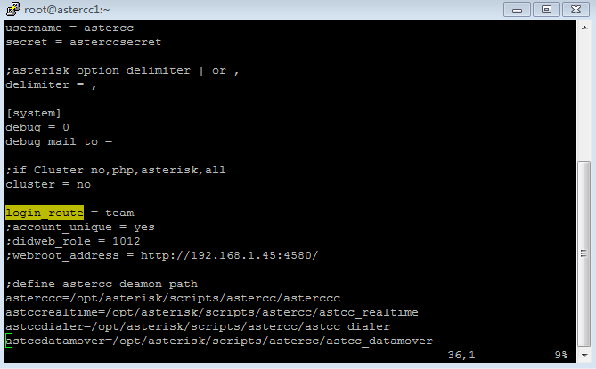
- Desde core-2.4-rc1: el mismo comportamiento se activa desde la interfaz, en Sistema → Configuración del sistema → Ruta de login = habilitado, sin editar el archivo de configuración.Respaldo del sistema (backup)¶
Procedimiento de respaldo manual, vía SSH al servidor:
- Base de datos:
mysqldump -uroot -p astercc10 | gzip > astercc_db.sql.gz(la contraseña de root de MySQL está en/etc/astercc.confsi no la tienes a mano). - Archivos:
sudo tar czfP astercc_files.tar.gz /etc/asterisk /etc/astercc.conf /opt/asterisk/scripts/astercc /var/lib/asterisk /var/spool/asterisk /var/www/html. - Descarga: mueve ambos archivos a una carpeta servida por el web server (ej.
/var/www/html/asterCC/app/webroot/) y descárgalos por navegador, FTP/SFTP, o conwgetdesde el propio servidor si usas CentOS.
Ver también la entrada de Solución de problemas si mysqldump falla al conectar por socket.
Warning
Al restaurar el backup en un servidor nuevo, revisar primero qué módulos tenía instalados el sistema original e instalarlos antes de restaurar — restaurar la base de datos sin los módulos correspondientes puede dejar referencias rotas en el sistema restaurado.
Agregar un paquete de idioma¶
- En Sistema → Idioma → Agregar, define nombre del idioma, código del idioma (abreviatura), si aparece en el listado de login, y notas.
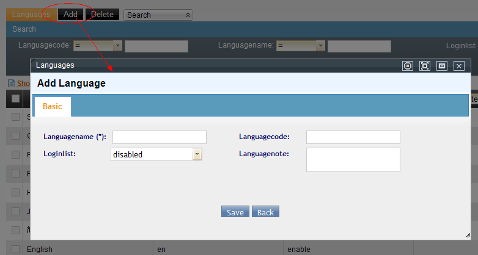
2. Cada idioma necesita su propio paquete de traducción: en el servidor, dentro de/var/www/html/astercc/app/locale, copia la carpeta del paquete chino o inglés existente, renómbrala con el código del nuevo idioma, y edita todos los archivos .po de la carpeta LC_MESSAGES correspondiente.
3. En cada archivo .po, traduce el texto entre comillas de la línea msgstr.
4. Coloca el paquete editado de vuelta en /var/www/html/astercc/app/locale — si activaste el listado de login, el nuevo idioma aparecerá en el selector de la pantalla de acceso.
Agregar archivos de sonido y grabaciones¶
Varias formas de incorporar audio al sistema:
- Grabar en Windows y subir: graba con cualquier grabador de sonido (formato requerido:
wav, 8000 KHz, 16 bits) y sube el archivo en PBX avanzado → SoundFiles → Agregar. Si no se elige un equipo, el archivo queda disponible para todos los equipos. - Usar el archivo en un anuncio: PBX avanzado → Anuncios → Agregar, elige el equipo de aplicación (o ninguno para todos), guarda y en el panel "Agregar sonido" elige el archivo para cada idioma.
- Usar el archivo como música en espera: PBX avanzado → MOHs → Agregar; el campo Identity debe escribirse en inglés (identificador interno). Después de agregarla, queda disponible en el desplegable de música en espera de Gestión de colas y en la configuración de dispositivos (Advance) para el tono de espera personalizado (CRBT).
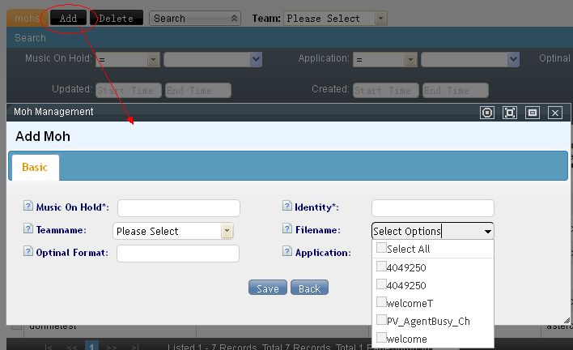
- Configurar el sonido de fallback de un IVR: en Ivrs, define el "Failedover" y elige el archivo que se reproducirá. - Grabar por teléfono: con el código de función*63 (Sistema → Feature Code) se activa la grabación desde cualquier softphone: graba, presiona # para terminar, luego 1 para escuchar, 2 para guardar o 3 para volver a grabar. El archivo guardado aparece al inicio del listado de SoundFiles.
Configurar música en espera (MOH)¶
- MOH global del sistema: Avanzado → MOHs → editar "default", subir un archivo
wavy hacer reload para aplicar. - Agregar un nuevo archivo de MOH: Avanzado → MOHs → Agregar; completa Nombre, Identity (identificador interno), Equipo y sube el archivo — los campos "Formato opcional" y "Aplicación" no están disponibles actualmente y no requieren configurarse.
- MOH por cola: Avanzado → Colas → editar la cola → campo "MOH" en Básico → elegir la nueva música → guardar y hacer reload.
- MOH por grupo de timbrado: PBX → Grupos de timbrado → editar el grupo → información básica → guardar y hacer reload.
- Tono de espera personalizado (CRBT) por dispositivo: PBX → Dispositivos → editar la extensión → datos avanzados.
Aprovisionamiento automático de teléfonos IP¶
Ejemplo con teléfonos Yealink:
- Crea una plantilla en Avanzado → Templates → Agregar, con Tipo = aprovisionamiento automático de teléfono IP, Tipo = SIP, y el Equipo de aplicación.
- En el campo Detail, pega la plantilla de configuración del fabricante, usando marcadores como
%% username %%,%% deviceidentity %%y%% secret %%— el sistema los reemplaza con los valores reales de la cuenta y el dispositivo al generar el archivo de aprovisionamiento. - Asocia el dispositivo de dos formas: fijo (PBX → Dispositivos → editar → Avanzado → dirección MAC del teléfono), o automático (Sistema → Configuración → "Equipo por defecto" → el sistema asigna el primer dispositivo libre de ese equipo al teléfono que se conecte).
- En el propio teléfono Yealink, ve a Configuración → Actualizaciones automáticas → "Server Address" y define
http://<ip_del_servidor>/provisions/provisioning. Al hacer clic en "Update Now", el teléfono descarga y aplica la configuración generada.
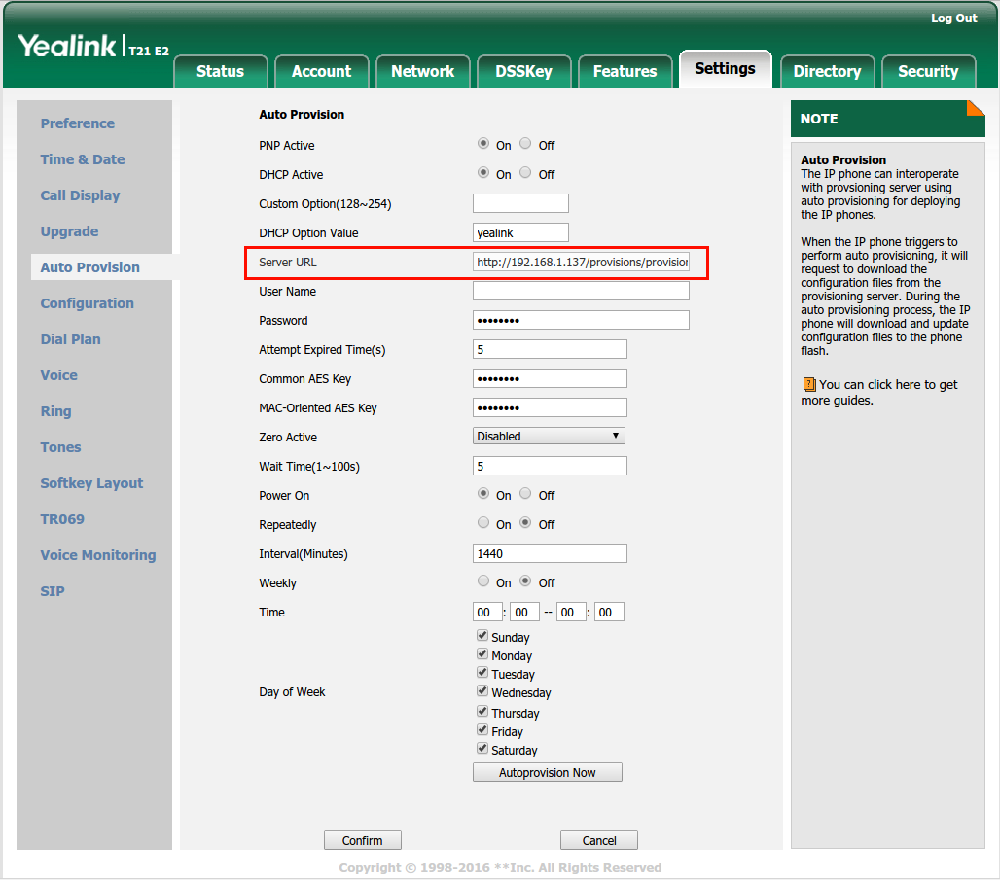
Tip
La plantilla de aprovisionamiento también puede incluir una URL de libreta de contactos (local_contact.data.url = http://<servidor>/contactdata.xml) apuntando a un archivo XML con la lista de contactos (nombre, número, línea, grupo) y una lista negra — el teléfono la descarga junto con su configuración de cuenta, sin necesidad de capturar los contactos manualmente en cada terminal.
Registro manual de un softphone SIP como extensión (sin plantilla de auto-deploy)
Antes de existir el aprovisionamiento automático por plantilla, el mismo resultado (un teléfono externo funcionando como extensión) se lograba dando de alta un dispositivo SIP manual y configurando esos mismos datos de registro directamente en el cliente SIP del teléfono. Sigue siendo el método aplicable a cualquier softphone que no soporte auto-provisioning.
Puede estar desactualizado
El ejemplo original usa un Nokia E71 y su cliente SIP nativo — terminal obsoleto, pero el mecanismo (dar de alta un dispositivo SIP en AsterCC y apuntar cualquier cliente SIP externo a esos datos de registro) sigue siendo válido para cualquier softphone SIP actual.
- En PBX → Dispositivos, agregar un nuevo dispositivo tipo SIP con la plantilla por defecto de dispositivo SIP. El sistema genera un identificador de registro (ej.
apcard-6001) y una contraseña. - En el softphone, configurar un perfil SIP con: nombre de usuario público
sip:<identificador>@<ip_servidor>, servidor proxy y servidor de registro apuntando a la IP del servidor AsterCC, dominio/realmigual al configurado ensip.conf, usuario y contraseña iguales al dispositivo creado, transporte UDP y puerto5060(o el configurado ensip.conf). - Verificar en la lista de dispositivos de AsterCC que el estado cambia a "OK" con el tiempo de respuesta del registro — confirma que el terminal ya funciona como extensión del sistema.
Restringir llamadas internacionales con código de autorización (PIN)¶
Para que solo agentes autorizados puedan marcar internacional, usando un PIN numérico:
- Prefijo de marcado: Usuarios → Equipos → editar el equipo → pestaña Básico → campo "PIN Prefix" — define el prefijo que activará la validación de PIN al marcar.
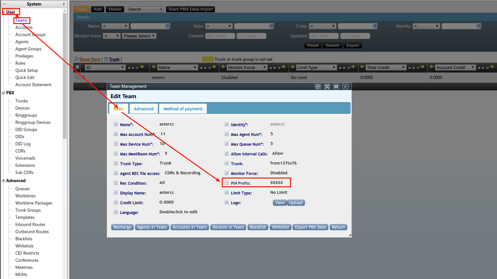
- Contraseña del PIN: Usuarios → Cuentas → editar la cuenta del agente → pestaña Básico → campo "PIN" — define la contraseña numérica de ese agente para ese prefijo.
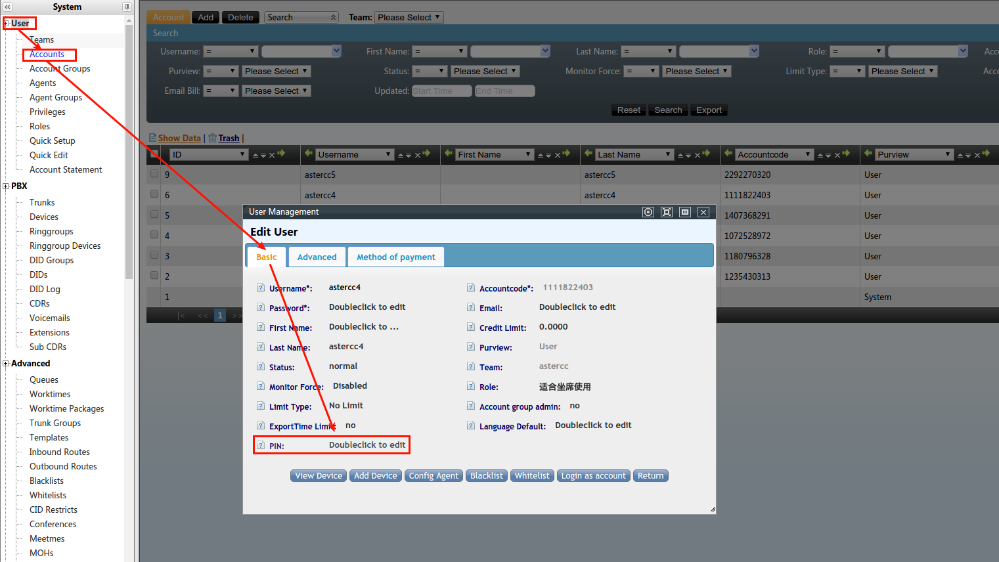
- Prueba: el agente marca el prefijo seguido del número destino (ej.
88888+076); el sistema pide la contraseña antes de continuar la llamada.
Warning
Si no se configura una contraseña de PIN, el sistema no permite la llamada saliente — el agente escuchará el mensaje de solicitud de PIN y la llamada se colgará automáticamente.
Integrar enlaces personalizados con sistemas de terceros¶
El campo de tipo "Link" en Clientes → Campos personalizados permite abrir una URL externa (mapas, CRM externo, etc.) con datos del cliente insertados automáticamente:
- En Clientes → Personalización, agrega un campo personalizado de tipo Link.
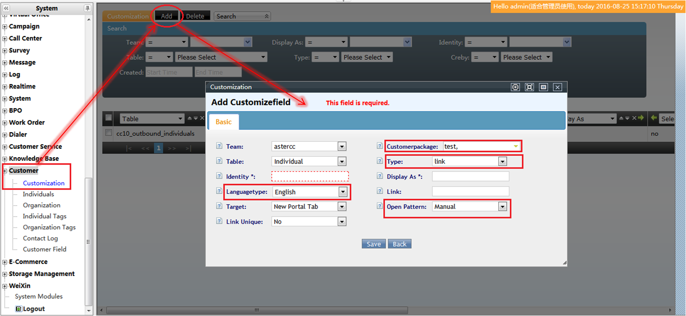
- En el patrón de apertura, elige Manual (el agente hace clic para abrir el enlace) o Automático (se abre solo al abrir la ficha del cliente).
- En la URL, reemplaza los valores por marcadores
##nombreDeCampo##— por ejemplo##address1##,##srcAddr##,##dstAddr##— que el sistema sustituye por el valor real del cliente en pantalla. - Aplica a cualquier proveedor de mapas (Google Maps, Baidu, Gaode, Tencent, Sogou) u otro sistema externo que acepte parámetros por URL, ej.
http://miapp.com/?phone=##phone1##&name=##individualname##.
Tip
Esta misma configuración de enlace aplica tanto para el módulo de campañas (marketing outbound) como para el de atención al cliente entrante — el campo personalizado se define una sola vez y se usa igual en ambos.
Realizar el plan de pruebas funcionales del sistema¶
Antes de poner en producción una instalación (o tras un cambio mayor), conviene validar el sistema de punta a punta con un plan de pruebas que cubra topología, funciones de agente, control de llamadas (CTI/ACD) y reportes.
Topología mínima de prueba: gateway FXO (conexión hacia la red telefónica pública), gateway FXS (para teléfonos analógicos), servidor AsterCC, PCs de agente y teléfonos IP, todos en la misma LAN. El gateway FXO convierte la señal analógica de la línea telefónica pública en SIP hacia el servidor; el FXS hace lo inverso para teléfonos analógicos. El puesto de agente puede ser un softphone SIP + diadema, o un teléfono analógico/IP conectado vía FXS.
Bloques de prueba sugeridos:
- Funciones de agente básico: login/logout (total o por cola específica), llamada entrante enrutada por ACD, estado de "trabajo después de llamada" (configurable como automático por timbrado, automático solo-si-contestada, o a elección del propio agente), consulta interna (a otro agente o a otra cola) y externa (a un número), pausa/reanudación con motivo, modos de trabajo (solo entrante / solo saliente / mixto).
- Funciones de supervisor: desde el panel de monitoreo en tiempo real de la cola, sobre una llamada en curso el supervisor de grupo puede: colgar (corta la llamada completa), escuchar (agente y cliente no lo oyen), susurrar/intervenir en tres vías (agente oye al supervisor, cliente no), o forzar el corte de la llamada del agente para tomar la comunicación con el cliente directamente.
- Funciones CTI/ACD: IVR con horarios distintos (horario laboral vs. fuera de horario, cada uno con su propio flujo de voz), pantalla emergente automática al contestar (con los datos ya conocidos del cliente si hay historial, incluyendo grupo de habilidades y número de acceso marcado), transferencia de IVR a agente (directo por número de agente, o vía cola con reglas de distribución: más tiempo sin atender, menor número de llamadas, aleatorio, o turno fijo), y avisos de espera en cola (agentes ocupados, intervalo de espera, cantidad en cola).
- Gestión y reportes: alta/edición masiva de cuentas, agentes, colas y grupos de cuentas (departamentos); grabación de llamadas con búsqueda, escucha en línea, descarga y empaquetado/respaldo por lotes; reportes de detalle de llamadas entrantes y salientes, desempeño de agente y de cola (tabulares y gráficos), y reporte de uso de troncales.
Tip
Ver también Solución de problemas si alguna de estas pruebas no se comporta como se espera durante la validación.
Configurar una tarifa y generar una factura (caso práctico)¶
Note
Este es un caso de aplicación puntual del módulo de tarifas y facturación (sección 4.4, fuera del alcance de este artículo) — para la referencia completa del módulo, consultar la documentación de esa sección. Aquí se documenta solo el flujo práctico de ejemplo.
AsterCC (edición comercial) calcula el costo de las llamadas salientes en tres niveles simultáneos:
- Tarifa de sistema: costo real, para calcular el costo operativo total.
- Tarifa de equipo: costo cobrado al equipo/departamento.
- Tarifa de cuenta: costo cobrado a la cuenta individual.
Combinado con la generación automática de facturas y el módulo financiero, esto permite operar un esquema básico de hosting telefónico facturable a terceros.
Ejemplo de reglas de tarifa por prefijo:
| Tipo de llamada | Regla de coincidencia |
|---|---|
| Local | Números que empiezan con 514 o 438 |
| Larga distancia nacional | Número de 10 dígitos |
| Larga distancia internacional | Números que empiezan con 011 |
Cada regla se asocia a un costo por minuto (o por llamada) en el nivel de tarifa correspondiente (sistema, equipo o cuenta). Una vez definidas las tarifas, se activa la generación de facturas para que el sistema acumule los cargos calculados en un documento de facturación periódico por cuenta o por equipo.
Puede estar desactualizado
Los prefijos del ejemplo (514, 438, 011) corresponden a un plan de numeración de Norteamérica (larga distancia internacional típica de EE. UU./Canadá) — ilustran la lógica de coincidencia por prefijo, no un plan de tarifas aplicable directamente a otro país.
Referencia rápida¶
| Caso | Punto de partida |
|---|---|
| IVR con voz | Acción "reconocimiento de voz" dentro del nodo de IVR |
| Troncal con operador móvil | Configuración de troncal + dtmfmode=inband |
| Callback desde IVR | Transferencia por fallo de la cola hacia un IVR con opción de callback |
| Webservice desde IVR | Acción "HTTP" dentro de un sub-IVR |
| Validar tarjeta de crédito en IVR | Acción "HTTP" + variables CARDNO/DATENO/R1 |
| Consulta/CB/Conf/Trans del agente | Barra de herramientas de la plataforma de agente |
| Enrutamiento por fecha/hora | Acción "Judge Time" + paquetes de horario |
| Caller ID | Orden de prioridad troncal > agente > campaña > dispositivo |
| Conectar servidores en LAN | Troncal + grupo de troncales + ruta entrante en ambos servidores |
| Sincronizar archivos con rsync | rsyncd.conf + rsync --daemon en origen, rsync -avzP en destino |
| Vincular dominio a equipo | login_route = team en astercc.conf (o equivalente en UI desde 2.4-rc1) |
| Respaldo del sistema | mysqldump + tar czfP + descarga |
| Agregar paquete de idioma | Sistema → Idioma → Agregar + edición de archivos .po |
| Agregar sonidos/grabaciones | PBX avanzado → SoundFiles / Anuncios / MOHs |
| Configurar MOH | Avanzado → MOHs (sistema, cola, grupo de timbrado, dispositivo) |
| Aprovisionamiento automático de IP phone | Avanzado → Templates con marcadores %% %% |
| Restringir llamadas internacionales | "PIN Prefix" del equipo + "PIN" de la cuenta |
| Enlaces personalizados con terceros | Campo tipo Link con marcadores ##campo## |
| Atajos de teclado de agente | Códigos *NN desde el teléfono + atajos de teclado en la interfaz web |
| Enrutar por destino con varios troncales | Grupo de troncales ordenado por prioridad + prefijo |
| VPN de acceso remoto (OpenVPN) | Easy-RSA (CA + certificados) + server.conf / client.ovpn |
| Postfix para SMTP saliente | Paquetes mailx/postfix + certificado NSS local |
| Instalación en gateway OpenVox IX-130 | Base CentOS (fuente incompleta) |
| Registro manual de softphone SIP (ej. Nokia) | Dispositivo SIP + configuración manual en el cliente |
| Enrutar por origen geográfico del número que llama | Condición de enrutamiento sobre el prefijo del número entrante |
| Plan de pruebas funcionales | Topología FXO/FXS + bloques de prueba (agente, supervisor, CTI/ACD, reportes) |
| Tarifa y facturación (caso práctico) | Reglas de prefijo por nivel (sistema/equipo/cuenta) + generación de factura |
Fuentes¶
raw/zh/用途和案例/ivr语音识别配置示例.txtraw/zh/用途和案例/中国移动ims对接.txtraw/en/use_case/how_to_config_asr_automatic_speech_recognition_in_ivr.txtraw/en/use_case/how_to_use_speech_recognition_in_ivr.txtraw/en/use_case/how_to_config_call_back_in_ivr.txtraw/en/use_case/call_webservice_in_ivr.txtraw/en/how-to/how_to_verify_validity_of_credit_card_in_ivr_module.txtraw/en/how-to/how_to_use_consult_cb_conf_trans.txtraw/en/real_case_guidance/how-to_config_inbound_route_based_on_datetime.txtraw/en/real_case_guidance/how_to_do_time_based_routing_in_ivr_options.txtraw/en/use_case/manage_caller_id.txtraw/en/how-to/how_to_manage_callerid_number.txtraw/en/real_case_guidance/how_to_implement_devices_connecting_between_different_servers_in_lan.txtraw/en/how-to/how_to_use_rsync_to_synchronize_files_on_a_remote_server.txtraw/en/use_case/bind_domain_and_team.txtraw/en/use_case/how_to_perform_system_backup.txtraw/en/real_case_guidance/how-to_add_language_package.txtraw/en/real_case_guidance/how-to_add_sound_files.txtraw/en/how-to/how_to_settings_the_astercc_moh.txtraw/en/how-to/how_to_setup_ip_phone_auto_provisioning.txtraw/en/how-to/how_to_set_agents_can_do_international_calls_with_an_authorization_numeric_code.txtraw/en/real_case_guidance/how_to_use_customized_link_to_integrate_with_3rd_party_system.txtraw/zh/实际案例指导/ivr语音识别配置示例.txtraw/zh/实际案例指导/linux创建openvpn.txtraw/zh/实际案例指导/如何搭建基于astercc系统的openvpn.txtraw/zh/实际案例指导/如何增加多语言包.txtraw/zh/实际案例指导/如何实现astercc系统的备份.txtraw/zh/实际案例指导/如何实现局域网内两套独立系统的分机之间互拨.txtraw/zh/实际案例指导/如何为不同的目的地设置不同中继.txtraw/zh/实际案例指导/将nokia自带sip电话注册为astercc分机.txtraw/zh/用途和案例/ip话机自动部署详解.txtraw/zh/用途和案例/linux下如何配置postfix使用smtp向外发送邮件.txtraw/zh/用途和案例/在电脑话务ivr中调用webservice并控制ivr转向.txtraw/zh/用途和案例/如何使用rsync同步远程服务器上的文件.txtraw/zh/用途和案例/如何使用快捷键.txtraw/zh/用途和案例/如何在openvox_ix_130上安装配置系统.txtraw/zh/用途和案例/如何配置按主叫号码归属地路由.txtraw/zh/用途和案例/管理主叫号码callerid.txtraw/zh/用途和案例/系统功能测试方案.txtraw/zh/用途和案例/设定计费费率和账单.txt